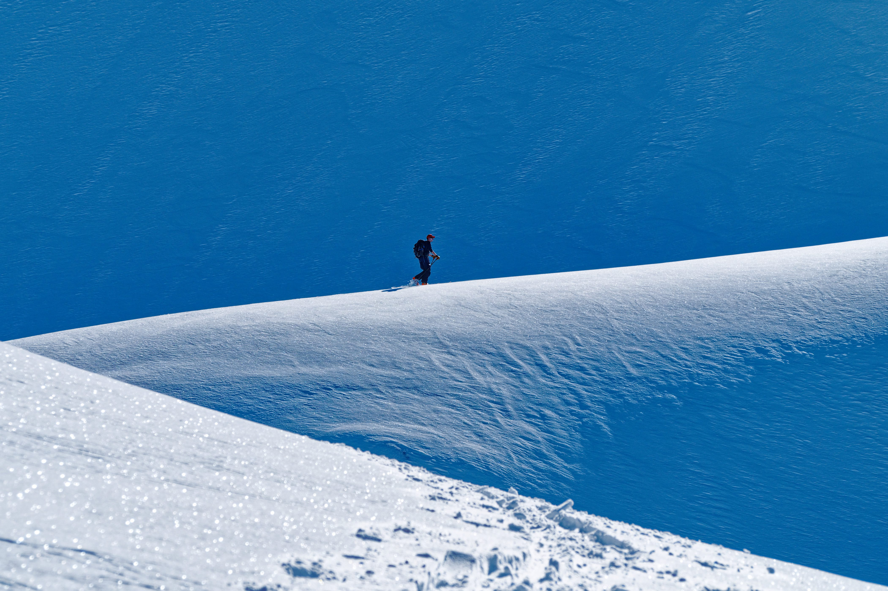

Where to start...
I grew up in Calgary where I never got along with school, but learned to love the mountains and all the activites to be found there.
In my early teens my father introduced me to climbing mountains and ever since standing on top of peaks is something I am willing to suffer to an unreasonable degree to experience. Now as my 30's are disappearing I have climbed more peaks than I can recount and have yet to find a reason to stop.
My other long-time love is skiing in all it's forms. I am an expert downhill, reasonably strong cross-country, love exploring on touring skis in the backcountry, and spent many years working as a Ski Patroler at resorts near Vancouver
When my girlfriend (now wife) decided to work on a doctoral degree at UBC I sure couldn't let her go alone so I moved to Vancouver with her. That was 12 years ago, and while we've had our issues with the housing market (who doesn't?) here and for a couple years in Squamish, we now live in New Westminster.
While in Calgary I completed a bachelors degree in Applied Policy Studies at Mount Royal College (now University) and then quickley decided I didn't care to sit at a desk and took up carpentry with a long time aquaintence. After moving to the Lower Mainland I began a variety of service jobs ranging from selling gear at MEC to guiding trips in the backcountry of BC.
Computers have long been a hobby of mine, and while my experience doesn't stretch to the dark ages, it does include the medieval ages with such memories as: 14.4k modems and that horrific noise, image-less web browsing, getting a coffee while waiting for pages to load, and a time before Goolge. I have long been handy with computer hardware, and a proponent of free and open source software, but my experience with software was almost always as user. I have long dabbled in programing, but that was mostly limited to copy+paste coding in simple applications.
Other hobbies of mine include:
Video Games -- I am somewhat of a coniseur but some of my favorites are Katamary Damacy, Dark Souls, Shadow of the Colossus, World of Warcraft, and Ni No Kumi.
RC vehicles -- which these days is mostly small (less than 250g) helicopters.
and running wild with fan theories to fill in the continuity holes of toddler television programs -- ask me about Paw Patrol if you want to waste half an hour.
I have recently been driving a school bus as a way to stay closer to home and deal with childcare, which has left me some spare time to consider where I want to move with my career. As an avid video game player I have dreams of getting involved in their creation, but my truest dream would be the creation of an "Illustrated Primer for Girls" to revolutionize education. There are of course many products that aim to educate, but none have met my aspirations as of yet; in fact most have been underwhelming examples of poor software designed to cost lots of money for government entities to buy.
Since a dream like that doesn't create itself I decided really learning to program would be a good first step.
I recognize that at this point in my life I am unlikely to become an all-star programer, but with my interpersonal and leaderships skills, I think my path forward will be in managing projects, but only time will tell.